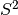

opfm.optimize package¶
Subpackages¶
Submodules¶
opfm.optimize.qpqc module¶
-
opfm.optimize.qpqc.solve_qp_s2(Q, p=None)¶
-
opfm.optimize.qpqc.solve_qp_s2_brute(Q, p=None, ntheta=1025, nphi=1025)¶ Solve the quadratic program xQx + px on 
-
opfm.optimize.qpqc.solve_qp_s2_brute_ii(Q, p, m, avpha, i, j)¶
-
opfm.optimize.qpqc.solve_qp_s2_brute_iijj(Q, p, m, avpha, i, j)¶